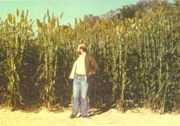
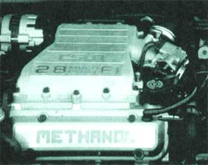

Will freedom from oil dependency happen in our lifetime?
RIGHT NOW, MORE THAN 500 million motor vehicles around the world are polluting the atmosphere-spewing emissions equivalent to their weight each year. They foul our air and poison our rain, and are also a major contributor to the global-warming effect which is dramatically altering the world's climate. Americans consume approximately 226 million gallons of gasoline each day. That's 82 billion gallons each year, 60% of the world's total oil consumption. And as the crises of the past year-political and environmental-have shown us, we need new options.
Some answers will be found in a combination of alternative-fuel vehicles and more-efficient conventional cars. Technology already exists to power vehicles using alcohol fuels, electricity, natural gas, propane, and hydrogen. And vehicles using these propellants are beginning to show up on the road today in convened fleet vehicles such as buses, delivery vans, and utility trucks.
And as cities like Los Angeles, New York, Denver, Houston, and Phoenix scramble to comply with the Clean Air Act legislation, we'll see more fleets-as well as personal cars-converted in the next few years. Even more impetus will come from the 1988 Alternative Motor Fuels Act, intended to increase use of alcohol fuels and natural gas as energy sources and to spur the production of vehicles designed to run on them.
Perhaps the best news about alcohol fuels is that they can be made from renewable resources such as corn and wood waste. Researchers are also studying ways to convert municipal solid waste-especially paper-into an alcohol fuel.
The two most promising alcohol fuels are ethanol and methanol. Their increased use lessens our dependence on fossil fuels, and they emit less carbon dioxide and monoxide and fewer hydrocarbons. The downside is that their exhaust is not wholly benign: The aldehydes they emit, including formaldehyde from methanol (a probable human carcinogen), may require special catalytic converters to minimize environmental risk.
Ethanol is primarily made from corn, though it can be made from other sources of biomass or from natural gas and crude oil. The U.S. Department of Energy is focusing its research on identifying alternative biomass feedstocks for ethanol since corn is valuable for other uses (and even if the nation's entire corn harvest were devoted to fuel, it would supply only 20 percent of our motor-vehicle needs at current efficiency).
Ethanol might now be a new name to some people, since about 8% of the automobile fuel pumped at service stations is "gasohol"-a gasoline blend containing 10% ethanol. Between 800 and 850 million gallons of ethanol are produced in the United States each year, and most of it is blended with gasoline, though it can be used as a "neat" fuel, which means "at full strength."
Gasohol is available mainly in the Midwest. You could fill your car's tank now with the mixture without having to make any alterations. And only up to $500 worth of adjustments would have to be made to your car's engine for it to run on pure ethanol.
Methanol, nicknamed "wood alcohol," is most commonly made from natural gas, though it can be produced from biomass or coal as well. Approximately 1.4 billion gallons are produced each year, but only about 530 million gallons, or 38%, are used in fuel applications. (It's primarily used as a chemical feedstock, extractant, or solvent.)
In fuel applications, methanol is used either as a gasoline-octane enhancer or blended with 15% gasoline to form a fuel called M85. This fuel is most available in California and Hawaii-states currently testing methanol-powered fleets. Converting the rest of the country to pure methanol would require replacing parts of a car's fuel tank and distribution system with materials that can withstand the highly solvent fuel. (Chevron performed tests on methanol-fueled conventional vehicles and found decomposing fuel systems and clogged filters.)
Practically speaking, the development of alcohol fuels as alternatives to gasoline is still in its infancy. For them to make sense environmentally, they should be mass-produced from a cheap, abundant source of biomass or waste product, and this segment of the technology remains at the research stages. Corn is not the ideal feedstock for ethanol, and large-scale methanol production from fossil fuels would either mean the eventual importation of natural gas (continued energy dependence) or increased pollution from coal production.
While research progresses to find economical biomass feedstocks, we can continue to blend alcohol fuels with gasoline to reduce emissions and at least lessen our demand for imported oil. And by the way, it's technically feasible, if not economical, to produce ethanol or methanol on a small scale for personal use.
In this design, a simple, battery-powered electric motor replaces the complex internal-combustion engine. No exhaust system pollutes the air. Electric vehicles are on the market today, and more choices are coming in the next few years.
The future looks bright for electric vehicles. Practically every major automaker, both foreign and domestic, has some sort of electric vehicle in the works. The one getting the most attention is General Motors's Impact-a flashy two-seater which GM says can go from 0 to 60 mph in eight seconds and travel 120 miles between charges.
GM is also developing an electric van, as are Ford and Chrysler. Why this seemingly sudden interest in a century-old technology? California. The country's most populous state has passed air-quality targets for 1998 that only the electric vehicle should be able to meet. By that year, 2% of all new vehicles sold in the state must emit no air pollutants; by 2003, 10% of all new vehicles sold, or about 200,000 cars, must meet that standard.
Most northeastern states are also expected to pass similar regulations. As a result, car manufacturers will be striving to increase the average speed and driving range of electric vehicles. Cars on the market today can only go an average of 60 miles at about 35 mph between charges. Higher speeds and stop-and-go traffic sacrifices driving range, and recharging (at a standard wall outlet) can take up to eight hours.
The key to making electric cars practical is improved battery technology. Conventional lead-acid batteries are the only commercially available ones right now, but new types such as nickel-iron, nickel-cadmium, sodium-sulfur, lithium-sulfide, and zinc-air are being developed to increase the range to 200 miles at a top speed of 70 mph.
Electric cars seem to be a viable solution for metropolitan areas battling smog. But the
production of electricity is also a major source of pollution.
These new batteries are lighter and can store more energy. They may also last up to 100,000 miles, whereas lead-acid batteries must be replaced every 20,000 miles at a cost of $1,500. Each type has its drawbacks, however: Nickel-iron batteries emit potentially explosive hydrogen gas when recharging (recharging area must be well-ventilated), and sodium-sulfur batteries must be kept at extremely high temperatures (car must be run at least every four days).
Another potential solution for short driving ranges is the electric hybrid vehicle. These contain a small gas engine that powers a generator to recharge the batteries while the car is cruising. Such cars could also run on electricity alone during short trips and to help meet zero-emissions standards.
New cars such as the Impact are expected to cost between $20.000 and $30,000. A few small companies are now selling converted electric cars for about $17,000. And you can purchase do-it-yourself conversion kits for about $7,000.
Electric cars seem to be a viable solution for metropolitan areas battling smog. But this technology isn't totally pollution-free: Electricity production, especially from coal, is a major polluter and carbon-dioxide generator. Renewable energy sources, solar in particular, could at least augment conventional power production, especially in sunbelt states like California. Parking lots could be equipped with solar electric (photovoltaic) battery-recharging stations, and the cars themselves could utilize solar panels. Some car ventilation systems are solar-powered now, but only experimental racing cars are actually powered by the sun.
Other issues needing further attention are crash safety and the disposal or recycling of spent batteries. Since batteries contain hazardous materials, both of these issues are extremely important.
Natural gas has become a key contender in the search for alternative fuels because of its many advantages over gasoline, including 90% less carbon monoxide and hydrocarbon emissions, no lead emissions, good cold-start capability, and smoother operation.
Perhaps its greatest advantage is cost. Refueling stations are selling natural gas for 57 cents per therm, or the gasoline equivalent of 70 cents per gallon-a savings of between 30 and 40 cents in most areas.
Utilities service most of the 30,000 natural-gas vehicles operating in the United States today. Most of them are fleet vehicles supported by their own private refueling stations. City bus systems, utility company fleets. Postal Service trucks, and United Parcel Service vans are big users of natural gas.
Of the 308 natural-gas pumps in the United States today, only a few are open to the public, so there aren't many personal cars making the switch yet. If your home has natural gas, you can spend about $3,000 for a unit that will allow you to refuel in your own backyard. And in California, Chevron and Pacific Gas & Electric are installing at least 40 public-refueling stations during 1992.
Natural gas is most commonly dispensed in compressed form (CNG), though it can also be turned into a liquid fuel (LNG) using high pressure and extreme cold. We'll probably see more LNG stations in the future because research has shown that it's more efficient than CNG.
Conversion to CNG is relatively simple: It takes less than a day and costs about $2,000. An aluminum tank is added to hold the gas, and modifications are made to the fuel delivery and carburetion systems. Once converted, the car can run on either gasoline or CNG. Maintenance costs, however, are lower with CNG use because the fuel doesn't form sludge, thus keeping the oil, spark plugs, and exhaust system cleaner.
GM trucks built specifically to run on CNG may be on the market later this year. Production of a CNG-powered Sierra pickup truck will begin in April, and the company expects to sell 5,000 of them in 1992. Most sales will be to utilities in California, Texas, and Colorado, but the trucks will also be available to the general public. They'll initially cost between $2,500 and $3,500 more than their gasoline counterparts.
Cars designed to run on CNG will be slower in coming, mainly because new designs are needed to accommodate the bulky fuel tank. In converted automobiles, the CNG tank eats up about half the trunk space. A big tank is needed because CNG has a lower energy density than gasoline. And even with the oversize tanks, driving range is only about 150 miles between refills.
Natural gas is making inroads into America's transportation scene mainly because it is cleaner-burning and less expensive than gasoline. It is still a fossil fuel, however, so burning it produces carbon dioxide which contributes to global warming. And though the United States has an abundance of natural gas right now, we'd have to import if it became our main transportation fuel.
Another fossil fuel-based alternative to gasoline is liquefied petroleum gas, commonly known as propane. It is a by-product of natural-gas processing and crude-oil refining, and like natural gas, it emits less carbon monoxide and fewer hydrocarbons. It also shares a similar cost advantage and has a comparable energy density.
Propane is more established as an alternative fuel than natural gas-it's been used this way for 60 years. Because of its clean-burning properties, it often propels fork-lifts, stationary engines, and other equipment operating in enclosed areas. About 350,000 vehicles in the United States are using it-again, most of them fleet vehicles. Ten thousand propane retail outlets offer vehicle-refueling stations, mainly at truckstops, RV centers, and campgrounds, but not often at regular service stations. Conoco is the first oil company to begin offering propane at its service stations, primarily in the Denver area. The vast majority of propane-powered vehicles are converted and can also operate on gasoline. The conversion process is similar to that for natural gas and costs about as much.
Although the United States is one of the world's largest producers of propane-making about 20 billion gallons a year- only 2% is used for transportation. The remainder is used for home heating and to make products such as pesticides, synthetic fiber, rubber, antifreeze, and solvents. The demand for it in these non-transportation areas is probably the major reason it's not getting as much attention as the other alternative fuels. Also, available quantities of propane are limited by natural gas and oil production, since it's a byproduct of these processes.
In the 1930s, scientists in England and Germany converted over 1,000 test vehicles to operate on hydrogen and hydrogen/gasoline mixtures. Today, NASA uses hydrogen to fuel space shuttles and rockets.
Hydrogen fuel seems ideal because the only by-products of combustion are water and a manageable amount of nitrogen oxide. It can be burned in standard internal-combustion engines, and we appear to have a limitless supply from a renewable source-water.
But if only it were that simple! Since pure hydrogen does not exist in a natural state, it must be extracted from other materials. Hydrogen is now produced most economically from natural gas, and, in the process, as much carbon dioxide is released as if the natural gas were burned. Another extraction option is electrolysis, or using an electric current to split water into hydrogen and oxygen. This option, while technically sound, isn't economically feasible at current electricity rates. (And it raises the question: Why use electricity to create hydrogen when electricity itself is an emissionless alternative fuel?)
Once extracted, hydrogen storage poses further difficulties because it's a dangerous gas with a low energy density. It's most commonly stored in metal cylinders in highly compressed form, but this method isn't practical for vehicles because the tanks are too heavy and bulky. Bavarian Motor Works (BMW) has developed a working prototype using liquid storage: The gas is liquefied at -423°F and placed in superinsulated vacuum tanks.
Perhaps the safest method of storage uses metal-hydride technology. The tank contains combinations of metals (in powder form) that have a strong attraction to the hydrogen, actually trapping it in their crystalline structures. Mercedes-Benz has been researching this technique. However, an 800-pound tank holds only the equivalent of four gallons of gasoline. Hydrides using superactivated carbon may double the storage capacity of this method, but it still won't provide driving ranges comparable to gasoline.
Another option for hydrogen as a transportation fuel is to use a hydrogen-powered fuel cell to generate electricity to power the car. A New Jersey company is developing a prototype of this option, which would make the driving range of electric cars comparable to that of conventional vehicles.
Large-scale hydrogen use probably won't commence until the fuel can be produced economically using renewable energy (solar or wind). A prototype solar-powered hydrogen plant using water electrolysis is being built in Riverside, California, and another is near completion in Germany.
It's nice to know there are so many viable options to gasoline and that the majority of them could be made from renewable resources. Renewable fuels are important not only for energy sustainability, but also to slow global warming. There's no escaping carbon-dioxide emissions when burning fossil fuels-oil, natural gas, and coal-no matter how efficient they burn. Carbon dioxide is also created when methanol and ethanol are produced and burned, but if they are made from grain or woody materials, the next crop reabsorbs an equal amount of carbon dioxide, so there is no net increase to the atmosphere.
Though vital to our future, none of these alternatives will totally replace gasoline, at least not in our lifetime. The massive infrastructural changes necessary to totally switch are mind-boggling, and we probably couldn't make enough of any one option to satisfy our needs.
Editor's Note: Shawna Tracy is an information specialist and Roberta Stauffer is a technical writer for NATAS, the National Appropriate Technology Assistance Service. NATAS is a U.S. Department of Energy-sponsored service that helps people implement renewable energy and energy efficiency projects at no cost. For more information on alternative fuels or other energy-related topics, write NATAS, P.O. Box 2525, Butte, MT 59702.
|
 Though vital to our future, none of these energy alternatives will totally replace gasoline?at least not in our lifetime |
|
 |